Get in touch.
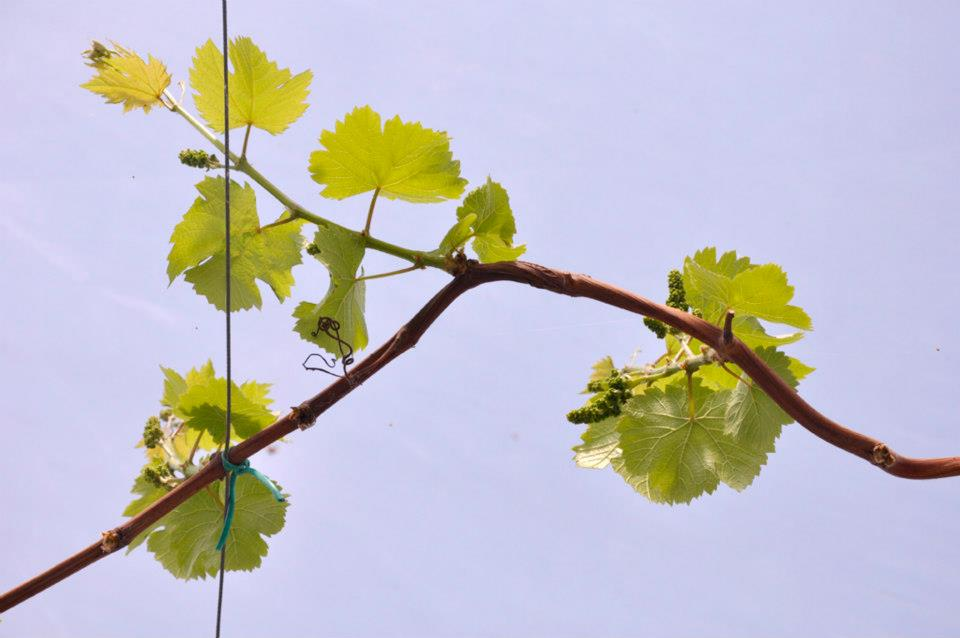
Made with love in collaboration with Giuseppe Licari & Friends
http://www.giuseppelicari.com
“Charlois (Scharlua’) Wijn is a legend we have been cultivating for years! Since 2009 in the Kas of Ot-je, our vines grow luxurious and tough in order to resist the cold Dutch winters and to provide us with the best and exclusive nectar of their Charlois Grapes.
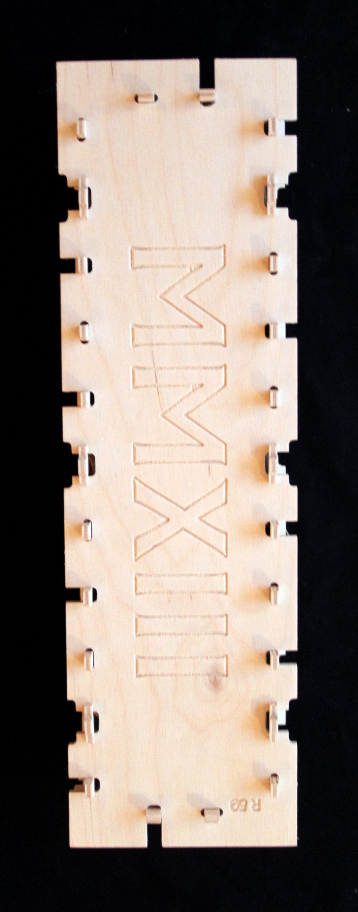
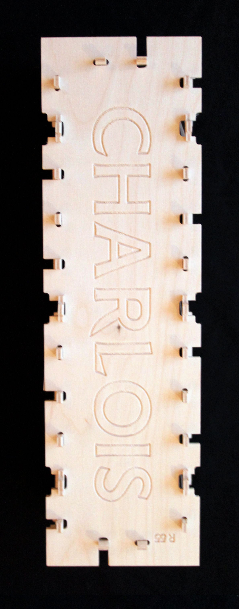
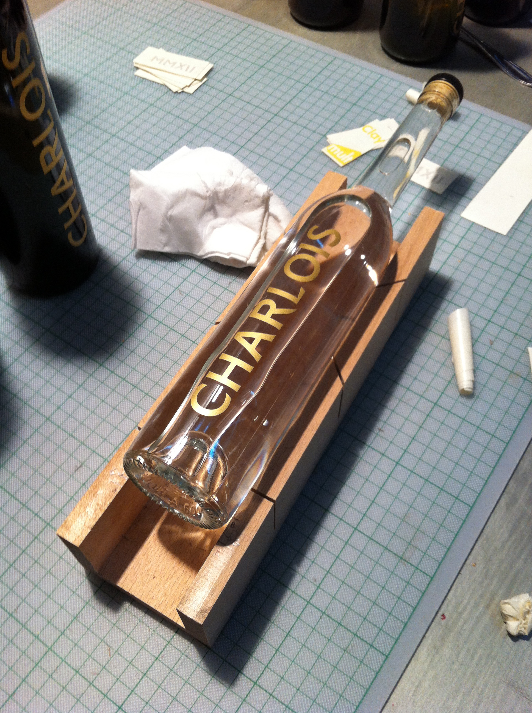
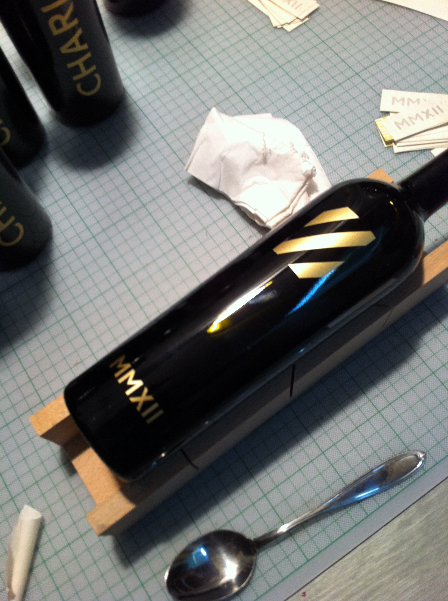
This is a little pet project we help out with is lead by Giuseppe Licari. As Giusseppe brought the grapes from Italy, we also imported some fine Italian typography to create his etiquette that is equally strong as the liquid gold inside these bottles.
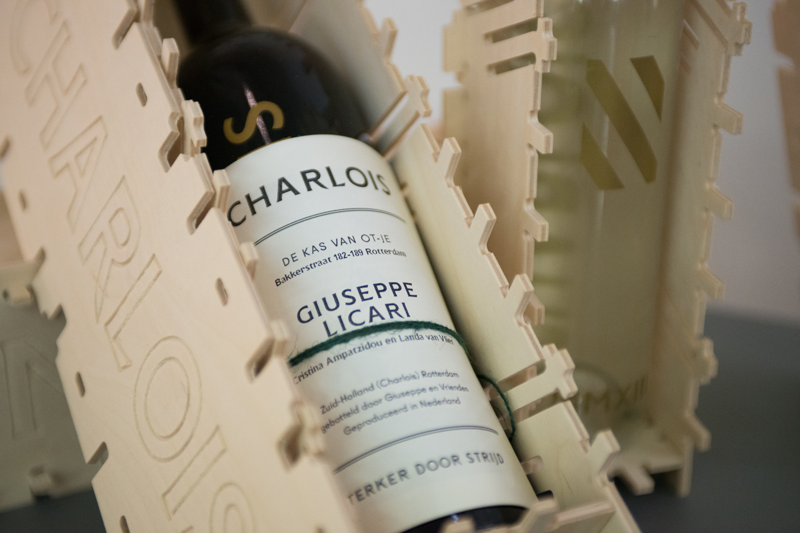
For three years now we’ve produced white, red wine and grappa. It tastes really good!
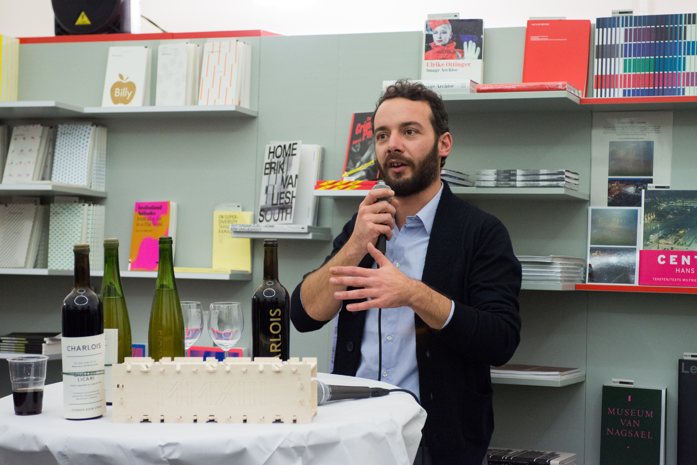
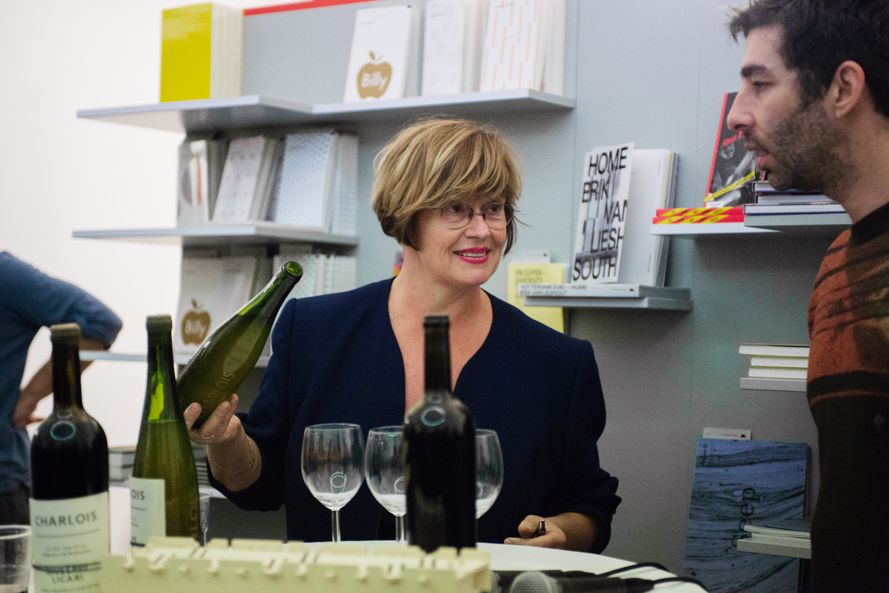
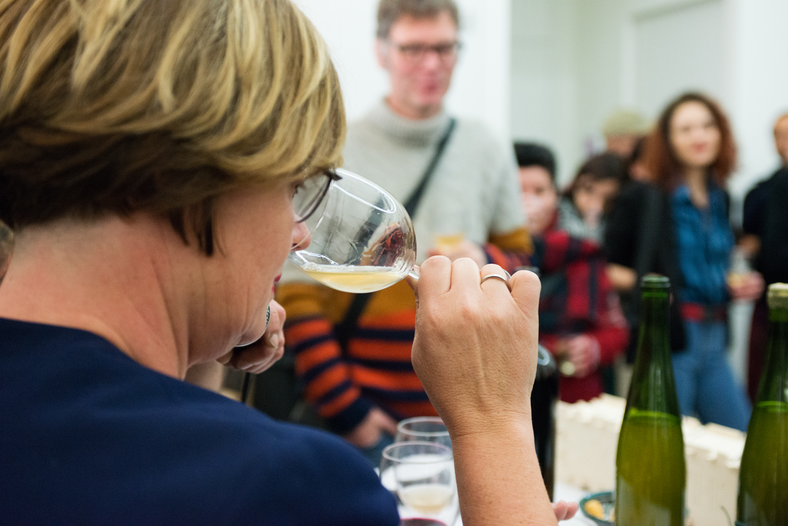
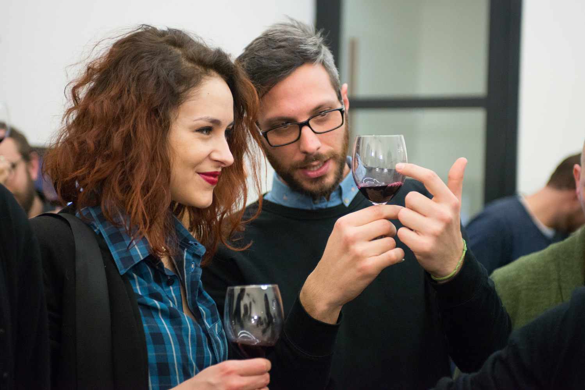
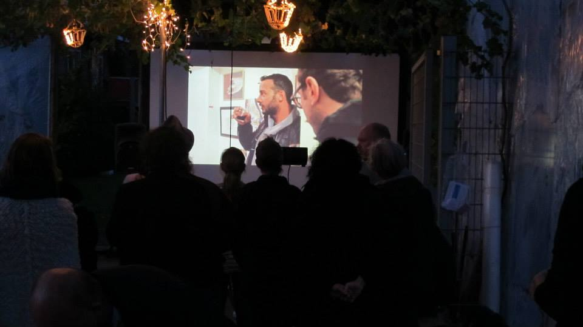
The special land composition of sand, soil, construction debris and a floor paved with concrete tiles, filters the right amount of water and minerals for an extraordinary and harmonic taste. The grapes are harvested by hand, burst by feet and then pressed manually, before they start fermenting naturally and slowly, without any chemical additions.
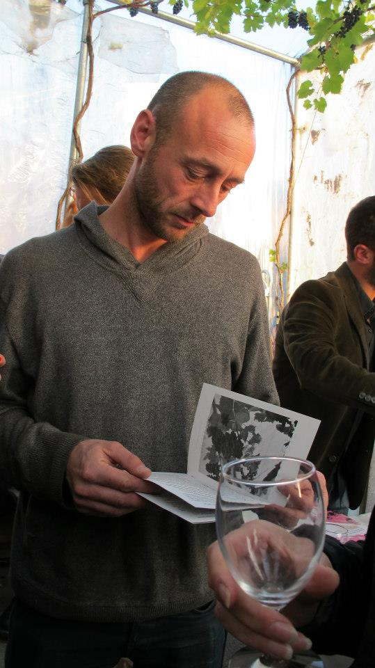
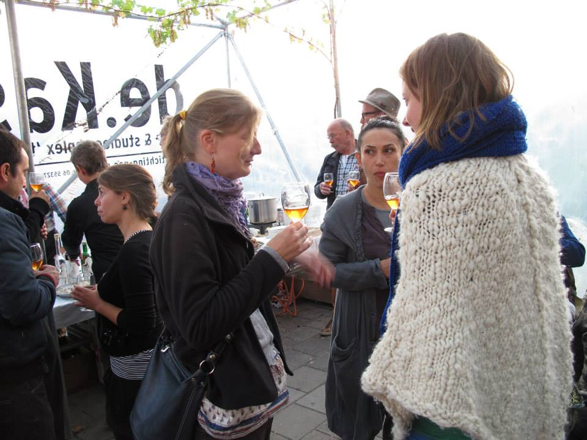
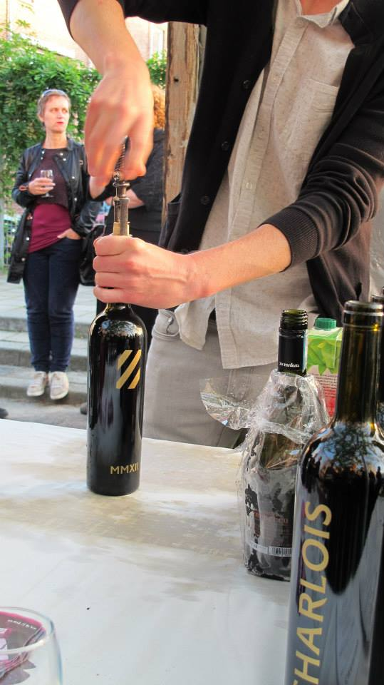
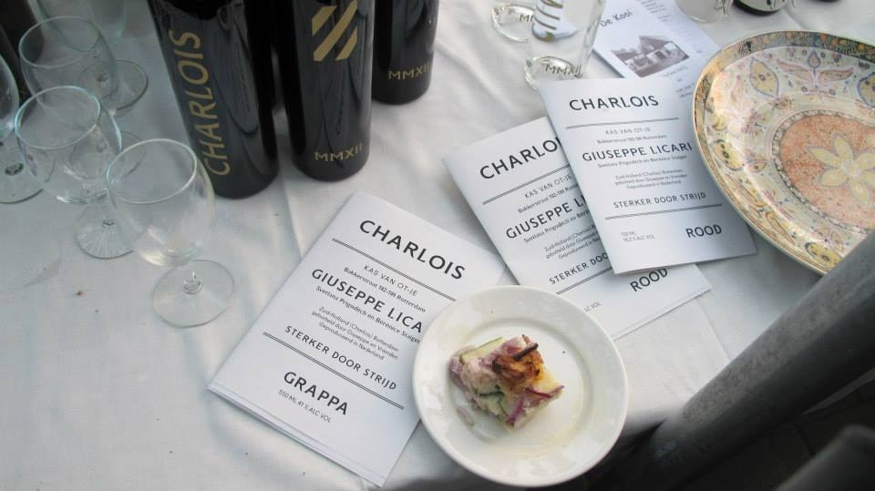
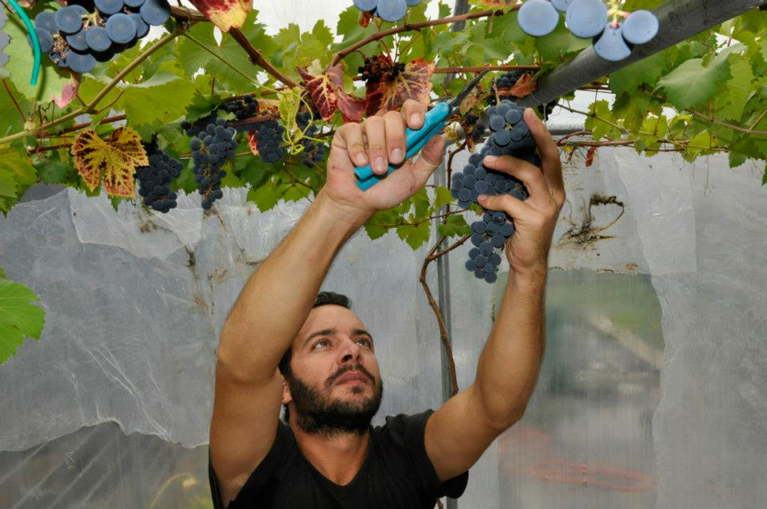
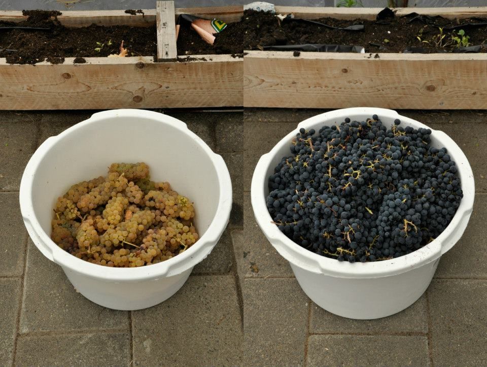